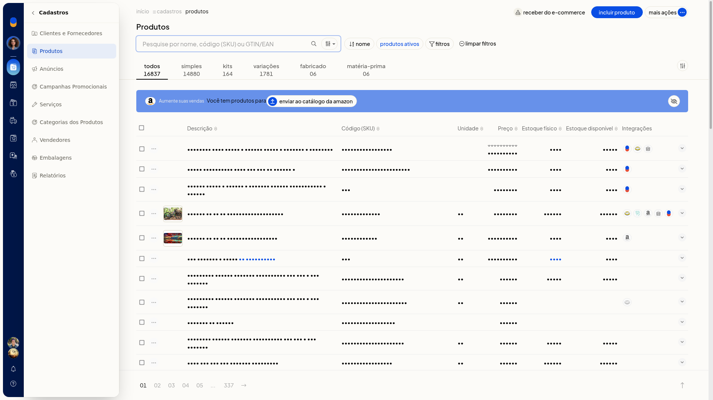
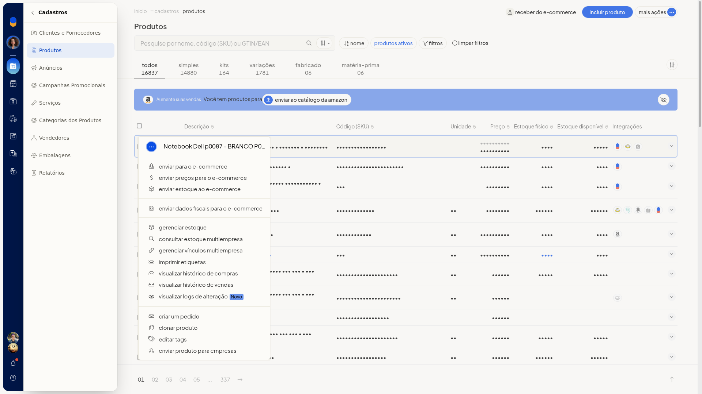
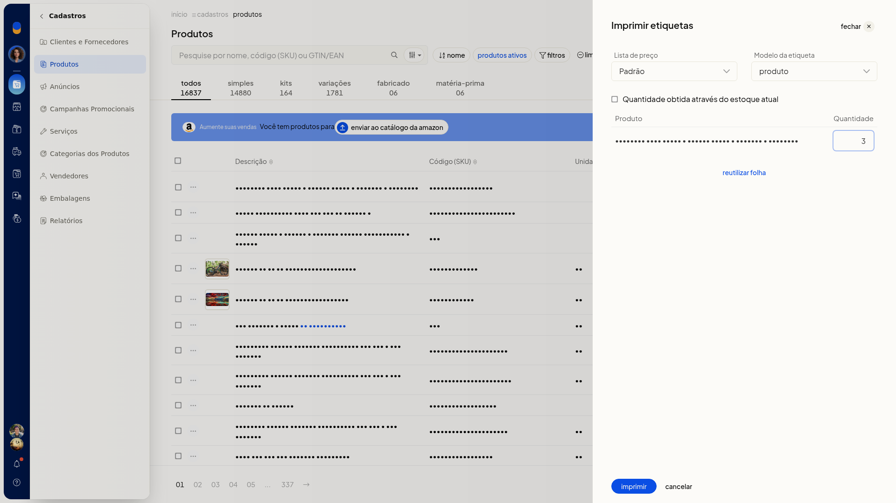
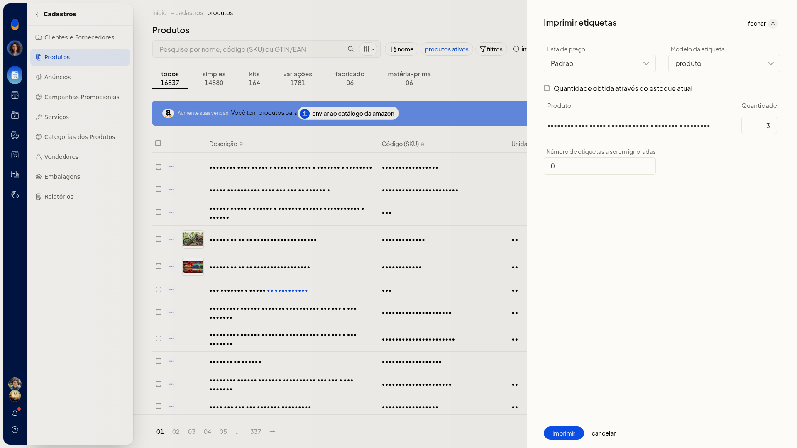
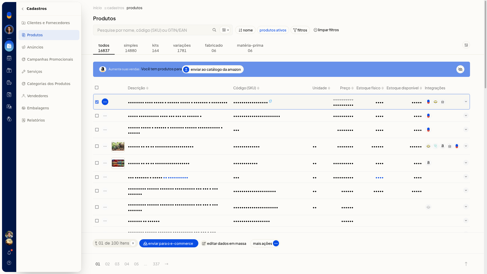
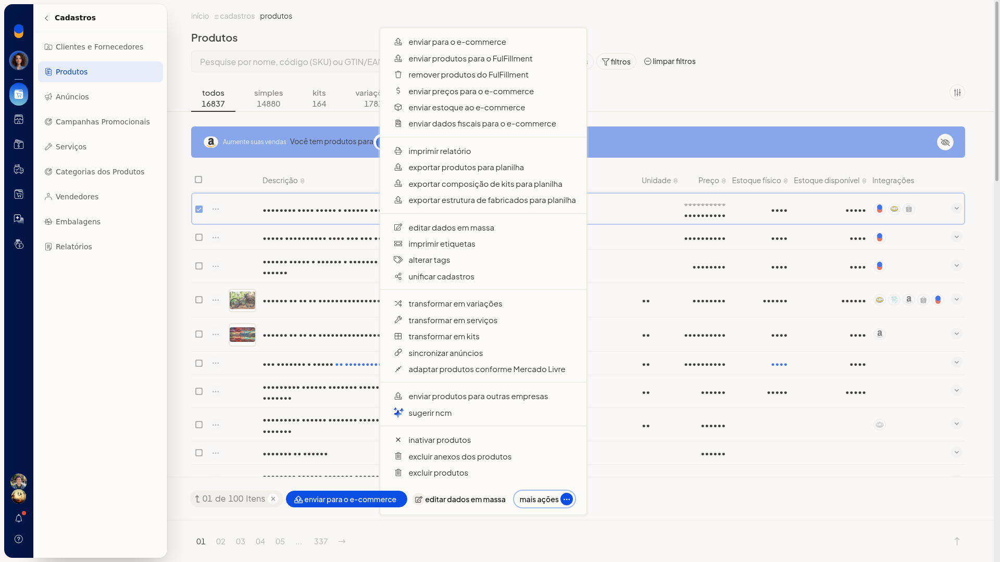

Imprimir etiquetas de produtos
No ERP da Olist, você imprime etiquetas dos produtos já cadastrados. Dá para escolher a lista de preço, o modelo e a quantidade, e também continuar uma folha já usada.
Instruções
-
Acesse Cadastros > Produtos.

-
Abra o menu de ações do produto e clique em Imprimir etiquetas.

-
Escolha a Lista de preço. O campo não é obrigatório. Padrão é uma das listas já cadastradas na conta.
-
Escolha o Modelo da etiqueta. O campo não é obrigatório. As opções são produto e Produto.
-
Informe a quantidade ou marque Quantidade obtida através do estoque atual. A caixa não é obrigatória. Com ela desmarcada, informe a quantidade à parte.

-
Para continuar uma folha já usada, use reutilizar folha e informe o Número de etiquetas a serem ignoradas. O campo não é obrigatório e só aparece depois de usar reutilizar folha.

-
Clique em imprimir para gerar as etiquetas.
Informações adicionais
Etiquetas pela seleção da listagem
Você também encontra Imprimir etiquetas nos produtos marcados na listagem. Marque um ou mais produtos, abra Mais ações na barra inferior e clique em Imprimir etiquetas.

